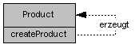
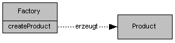
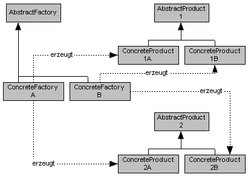
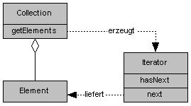
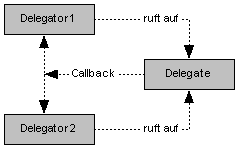
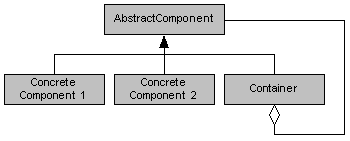
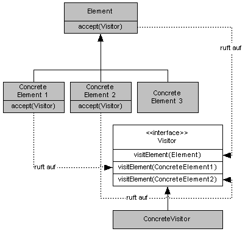
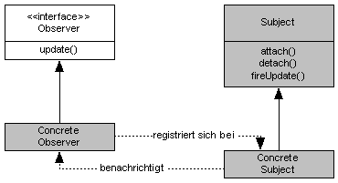

Design-Patterns (oder Entwurfsmuster)
sind eine der wichtigsten und interessantesten Entwicklungen der objektorientierten
Programmierung der letzten Jahre. Basierend auf den Ideen des Architekten
Christopher Alexander wurden sie durch
das Buch »Design-Patterns - Elements of Reusable Object-Oriented
Software« von Erich Gamma, Richard
Helm, Ralph Johnson
und John Vlissides 1995 einer breiten
Öffentlichkeit bekannt.
Als Design-Patterns bezeichnet man (wohlüberlegte) Designvorschläge
für den Entwurf objektorientierter Software-Systeme. Ein Design-Pattern
deckt dabei ein ganz bestimmtes Entwurfsproblem ab und beschreibt
in rezeptartiger Weise das Zusammenwirken von Klassen, Objekten und
Methoden. Meist sind daran mehrere Algorithmen und/oder Datenstrukturen
beteiligt. Design-Patterns stellen wie Datenstrukturen oder Algorithmen
vordefinierte Lösungen für konkrete Programmierprobleme
dar, allerdings auf einer höheren Abstraktionsebene.
Einer der wichtigsten Verdienste standardisierter Design-Patterns
ist es, Softwaredesigns Namen zu geben. Zwar ist es in der
Praxis nicht immer möglich oder sinnvoll, ein bestimmtes Design-Pattern
in allen Details zu übernehmen. Die konsistente Verwendung ihrer
Namen und ihres prinzipiellen Aufbaus erweitern jedoch das Handwerkszeug
und die Kommunikationsfähigkeit des OOP-Programmierers beträchtlich.
Begriffe wie Factory, Iterator oder Singleton
werden in OO-Projekten routinemäßig verwendet und sollten
für jeden betroffenen Entwickler dieselbe Bedeutung haben.
Wir wollen nachfolgend einige der wichtigsten Design-Patterns vorstellen
und ihre Implementierung in Java skizzieren. Die Ausführungen
sollten allerdings nur als erster Einstieg in das Thema angesehen
werden. Viele Patterns können hier aus Platzgründen gar
nicht erwähnt werden, obwohl sie in der Praxis einen hohen Stellenwert
haben (z.B. Adapter, Bridge, Mediator, Command etc.). Zudem ist die
Bedeutung eines Pattern für den OOP-Anfänger oft gar nicht
verständlich, sondern erschließt sich erst nach Monaten
oder Jahren zusätzlicher Programmiererfahrung.
Die folgenden Abschnitte ersetzen also nicht die Lektüre weiterführender
Literatur zu diesem Thema. Das oben erwähnte Werk von Gamma et
al. ist nach wie vor einer der Klassiker schlechthin (die Autoren
und ihr Buch werden meist als »GoF« bezeichnet, ein Akronym
für »Gang of Four«). Daneben
existieren auch spezifische Kataloge, in denen die Design-Patterns
zu bestimmten Anwendungsgebieten oder auf der Basis einer ganz bestimmten
Sprache, wie etwa C++ oder Java, beschrieben werden.
11.4.1 Singleton
Ein Singleton ist eine Klasse, von der nur ein einziges Objekt
erzeugt werden darf. Es stellt eine globale Zugriffsmöglichkeit
auf dieses Objekt zur Verfügung und instanziert es beim ersten
Zugriff automatisch. Es gibt viele Beispiele für Singletons.
So ist etwa der Spooler in einem Drucksystem ein Singleton oder der
Fenstermanager unter Windows, der Firmenstamm in einem Abrechnungssystem
oder die Übersetzungstabelle in einem Parser.
Wichtige Designmerkmale einer Singleton-Klasse sind:
- Sie besitzt eine statische Membervariable ihres eigenen Typs,
in dem die einzige Instanz gespeichert wird.
- Sie besitzt eine statische Methode getInstance,
mit der auf die Instanz zugegriffen werden kann.
- Sie besitzt einen privaten parameterlosen Konstruktor, um zu verhindern,
dass andere Klassen durch Anwendung des new-Operators
eine Instanz erzeugen (er verhindert allerdings auch das Ableiten
anderer Klassen).
Eine beispielhafte Implementierung könnte so aussehen:
001 public class Singleton
002 {
003 private static Singleton instance = null;
004
005 public static Singleton getInstance()
006 {
007 if (instance == null) {
008 instance = new Singleton();
009 }
010 return instance;
011 }
012
013 private Singleton()
014 {
015 }
016 }
|
Singleton.java |
Listing 11.10: Implementierung eines Singleton
Singletons sind oft nützlich, um den Zugriff auf statische Variablen
zu kapseln und ihre Instanzierung zu kontrollieren. Da in der vorgestellten
Implementierung das Singleton immer an einer statischen Variable hängt,
ist zu beachten, dass es während der Laufzeit des Programms nie
an den Garbage Collector zurückgegeben und der zugeordnete Speicher
freigegeben wird. Dies gilt natürlich auch für weitere Objekte,
auf die von diesem Objekt verwiesen wird.
11.4.2 Immutable
Als immutable (unveränderlich) bezeichnet man Objekte,
die nach ihrer Instanzierung nicht mehr verändert werden können.
Ihre Membervariablen werden im Konstruktor oder in Initialisierern
gesetzt und danach ausschließlich im lesenden Zugriff verwendet.
Unveränderliche Objekte gibt es an verschiedenen Stellen in der
Java-Klassenbibliothek. Bekannte Beispiele sind die Klassen String
(siehe Kapitel 12) oder
die in Abschnitt 11.2 erläuterten
Wrapper-Klassen. Unveränderliche Objekte können gefahrlos
mehrfach referenziert werden und erfordern im Multithreading keinen
Synchronisationsaufwand.
Wichtige Designmerkmale einer Immutable-Klasse sind:
- Alle Membervariablen sind privat.
- Schreibende Zugriffe auf Membervariablen finden ausschließlich
im Konstruktor oder in Initialisierern statt.
- Lesende Zugriffe auf Membervariablen sind verboten, wenn der Member
ein veränderliches Objekt oder ein Array ist.
- Werden veränderliche Objekte oder Arrays an einen Konstruktor
übergeben, so müssen sie geklont (also kopiert) werden,
bevor sie Membervariablen zugewiesen werden dürfen.
Eine beispielhafte Implementierung könnte so aussehen:
001 public class Immutable
002 {
003 private int value1;
004 private String[] value2;
005
006 public Immutable(int value1, String[] value2)
007 {
008 this.value1 = value1;
009 this.value2 = (String[])value2.clone();
010 }
011
012 public int getValue1()
013 {
014 return value1;
015 }
016
017 public String getValue2(int index)
018 {
019 return value2[index];
020 }
021 }
|
Immutable.java |
Listing 11.11: Implementierung eines Immutable
11.4.3 Interface
Ein Interface trennt die Beschreibung von Eigenschaften einer Klasse
von ihrer Implementierung. Dabei ist es sowohl erlaubt, dass ein Interface
von mehr als einer Klasse implementiert wird, als auch, dass eine
Klasse mehrere Interfaces implementiert. In Java ist ein Interface
ein fundamentales Sprachelement. Es wurde in Kapitel 10
ausführlich beschrieben und soll hier nur der Vollständigkeit
halber aufgezählt werden. Für Details verweisen wir auf
die dort gemachten Ausführungen.
11.4.4 Factory
Eine Factory ist ein Hilfsmittel zum Erzeugen von Objekten.
Sie wird verwendet, wenn das Instanzieren eines Objekts mit dem new-Operator
alleine nicht möglich oder sinnvoll ist - etwa weil das Objekt
schwierig zu konstruieren ist oder aufwändig konfiguriert werden
muss, bevor es verwendet werden kann. Manchmal müssen Objekte
auch aus einer Datei, über eine Netzwerkverbindung oder aus einer
Datenbank geladen werden, oder sie werden auf der Basis von Konfigurationsinformationen
aus systemnahen Modulen generiert. Eine Factory wird auch dann eingesetzt,
wenn die Menge der Klassen, aus denen Objekte erzeugbar sind, dynamisch
ist und zur Laufzeit des Programms erweitert werden kann.
In diesen Fällen ist es sinnvoll, das Erzeugen neuer Objekte
von einer Factory erledigen zu lassen. Wir wollen nachfolgend die
drei wichtigsten Varianten einer Factory vorstellen.
Factory-Methode
Gibt es in einer Klasse, von der Instanzen erzeugt werden sollen,
eine oder mehrere statische Methoden, die Objekte desselben Typs erzeugen
und an den Aufrufer zurückgeben, so bezeichnet man diese als
Factory-Methoden. Sie rufen implizit den new-Operator
auf, um Objekte zu instanzieren, und führen alle Konfigurationen
durch, die erforderlich sind, um ein Objekt in der gewünschten
Weise zu konstruieren.
Das Klassendiagramm für eine Factory-Methode sieht so aus:

Abbildung 11.1: Klassendiagramm einer Factory-Methode
Wir wollen beispielhaft die Implementierung einer Icon-Klasse
skizzieren, die eine Factory-Methode loadFromFile
enthält. Sie erwartet als Argument einen Dateinamen, dessen Erweiterung
sie dazu verwendet, die Art des Ladevorgangs zu bestimmen. loadFromFile
instanziert ein Icon-Objekt
und füllt es auf der Basis des angegebenen Formats mit den Informationen
aus der Datei:
001 public class Icon
002 {
003 private Icon()
004 {
005 //Verhindert das manuelle Instanzieren
006 }
007
008 public static Icon loadFromFile(String name)
009 {
010 Icon ret = null;
011 if (name.endsWith(".gif")) {
012 //Code zum Erzeugen eines Icons aus einer gif-Datei...
013 } else if (name.endsWith(".jpg")) {
014 //Code zum Erzeugen eines Icons aus einer jpg-Datei...
015 } else if (name.endsWith(".png")) {
016 //Code zum Erzeugen eines Icons aus einer png-Datei...
017 }
018 return ret;
019 }
020 }
|
Icon.java |
Listing 11.12: Eine Klasse mit einer Factory-Methode
Factory-Klasse
Eine Erweiterung des Konzepts der Factory-Methode ist die Factory-Klasse.
Hier ist nicht eine einzelne Methode innerhalb der eigenen
Klasse für das Instanzieren neuer Objekte zuständig, sondern
es gibt eine eigenständige Klasse für diesen Vorgang. Das
kann beispielsweise sinnvoll sein, wenn der Herstellungsvorgang zu
aufwändig ist, um innerhalb der zu instanzierenden Klasse vorgenommen
zu werden. Eine Factory-Klasse könnte auch sinnvoll sein, wenn
es später erforderlich werden könnte, die Factory selbst
austauschbar zu machen. Ein dritter Grund kann sein, dass es
gar keine Klasse gibt, in der eine Factory-Methode untergebracht werden
könnte. Das ist insbesondere dann der Fall, wenn unterschiedliche
Objekte hergestellt werden sollen, die lediglich ein gemeinsames Interface
implementieren.
Das Klassendiagramm für eine Factory-Klasse sieht so aus:

Abbildung 11.2: Klassendiagramm einer Factory-Klasse
Als Beispiel wollen wir noch einmal das Interface DoubleMethod
aus Listing 10.14 aufgreifen.
Wir wollen dazu eine Factory-Klasse DoubleMethodFactory
entwickeln, die verschiedene Methoden zur Konstruktion von Objekten
zur Verfügung stellt, die das Interface DoubleMethod
implementieren:
001 public class DoubleMethodFactory
002 {
003 public DoubleMethodFactory()
004 {
005 //Hier wird die Factory selbst erzeugt und konfiguriert
006 }
007
008 public DoubleMethod createFromClassFile(String name)
009 {
010 //Lädt die Klassendatei mit dem angegebenen Namen,
011 //prüft, ob sie DoubleMethod implementiert, und
012 //instanziert sie gegebenenfalls...
013 return null;
014 }
015
016 public DoubleMethod createFromStatic(String clazz,
017 String method)
018 {
019 //Erzeugt ein Wrapper-Objekt, das das Interface
020 //DoubleMethod implementiert und beim Aufruf von
021 //compute die angegebene Methode der vorgegebenen
022 //Klasse aufruft...
023 return null;
024 }
025
026 public DoubleMethod createFromPolynom(String expr)
027 {
028 //Erzeugt aus dem angegebenen Polynom-Ausdruck ein
029 //DoubleMethod-Objekt, in dem ein äquivalentes
030 //Polynom implementiert wird...
031 return null;
032 }
033 }
|
DoubleMethodFactory.java |
Listing 11.13: Eine Factory-Klasse
Die Anwendung einer Factory-Klasse ist hier sinnvoll, weil der Code
zum Erzeugen der Objekte sehr aufwändig ist und weil Objekte
geliefert werden sollen, die zwar ein gemeinsames Interface implementieren,
aber aus sehr unterschiedlichen Vererbungshierarchien stammen können.
Eine Abstracte Factory ist eine recht aufwändige Erweiterung
der Factory-Klasse, bei der zwei zusätzliche Gedanken im Vordergrund
stehen:
- Erstens soll nicht nur ein einzelner Objekttyp erzeugt werden,
sondern mehrere von ihnen. Deren Klassen stehen in einer bestimmten
Beziehung zueinander und die erzeugten Objekte müssen miteinander
verträglich sein. Die Objekttypen können als Produkte,
die Gesamtheit der von einer Factory erzeugten Produkte als Produktgruppe
bezeichnet werden.
- Zweitens soll die Factory austauschbar sein. Dann kann auf einfache
Weise eine andere Implementierungsvariante gemeinsam für
alle zu erzeugenden Objekte gewählt werden.
Eine abstrakte Factory wird auch als Toolkit
bezeichnet. Ein Beispiel dafür findet sich in grafischen Ausgabesystemen
bei der Erzeugung von Dialogelementen (Widgets) für unterschiedliche
Fenstermanager. Eine konkrete Factory muss in der Lage sein, unterschiedliche
Dialogelemente so zu erzeugen, dass sie in Aussehen und Bedienung
konsistent sind. Auch die Schnittstelle für Programme sollte
über Fenstergrenzen hinweg konstant sein. Konkrete Factories
könnte es etwa für Windows, X-Window oder die Macintosh-Oberfläche
geben.
Eine abstrakte Factory kann durch folgende Bestandteile beschrieben
werden:
- Jedes Produkt besitzt eine Basisklasse, die seine spezifischen
Eigenschaften angibt (die abstrakte Produktklasse). Jede Factory-Methode
hat einen Rückgabewert, dessen Typ einer der abstrakten Produktklassen
entspricht.
- Je Implementierungsvariante gibt es aus den abstrakten Produkten
abgeleitete konkrete Produkte, die von der zugehörigen
konkreten Factory erzeugt werden.
- Alle Factory-Methoden werden in der abstrakten Factory-Klasse
zusammengefasst. Sie bildet das Interface für das Erzeugen der
Produkte.
- Zu jeder Implementierungsvariante gibt es eine aus der abstrakten
Factory abgeleitete konkrete Factory. Sie implementiert alle abstrakten
Factory-Methoden und ist in der Lage, die konkreten Produkte einer
Implementierungsvariante zu erzeugen.
- Schließlich gibt es eine Möglichkeit, eine konkrete
Factory zu erzeugen. Das kann beispielsweise durch eine statische
Methode in der abstrakten Factory realisiert werden.
Das Klassendiagramm für eine abstrakte Factory sieht so aus:

Abbildung 11.3: Klassendiagramm einer abstrakten Factory
Das folgende Listing skizziert ihre Implementierung:
001 /* Listing1114.java */
002
003 //------------------------------------------------------------------
004 //Abstrakte Produkte
005 //------------------------------------------------------------------
006 abstract class Product1
007 {
008 }
009
010 abstract class Product2
011 {
012 }
013
014 //------------------------------------------------------------------
015 //Abstrakte Factory
016 //------------------------------------------------------------------
017 abstract class ProductFactory
018 {
019 public abstract Product1 createProduct1();
020
021 public abstract Product2 createProduct2();
022
023 public static ProductFactory getFactory(String variant)
024 {
025 ProductFactory ret = null;
026 if (variant.equals("A")) {
027 ret = new ConcreteFactoryVariantA();
028 } else if (variant.equals("B")) {
029 ret = new ConcreteFactoryVariantB();
030 }
031 return ret;
032 }
033
034 public static ProductFactory getDefaultFactory()
035 {
036 return getFactory("A");
037 }
038 }
039
040 //------------------------------------------------------------------
041 //Konkrete Produkte für Implementierungsvariante A
042 //------------------------------------------------------------------
043 class Product1VariantA
044 extends Product1
045 {
046 }
047
048 class Product2VariantA
049 extends Product2
050 {
051 }
052
053 //------------------------------------------------------------------
054 //Konkrete Factory für Implementierungsvariante A
055 //------------------------------------------------------------------
056 class ConcreteFactoryVariantA
057 extends ProductFactory
058 {
059 public Product1 createProduct1()
060 {
061 return new Product1VariantA();
062 }
063
064 public Product2 createProduct2()
065 {
066 return new Product2VariantA();
067 }
068 }
069
070 //------------------------------------------------------------------
071 //Konkrete Produkte für Implementierungsvariante B
072 //------------------------------------------------------------------
073 class Product1VariantB
074 extends Product1
075 {
076 }
077
078 class Product2VariantB
079 extends Product2
080 {
081 }
082
083 //------------------------------------------------------------------
084 //Konkrete Factory für Implementierungsvariante B
085 //------------------------------------------------------------------
086 class ConcreteFactoryVariantB
087 extends ProductFactory
088 {
089 public Product1 createProduct1()
090 {
091 return new Product1VariantB();
092 }
093
094 public Product2 createProduct2()
095 {
096 return new Product2VariantB();
097 }
098 }
099
100 //------------------------------------------------------------------
101 //Beispielanwendung
102 //------------------------------------------------------------------
103 public class Listing1114
104 {
105 public static void main(String[] args)
106 {
107 ProductFactory fact = ProductFactory.getDefaultFactory();
108 Product1 prod1 = fact.createProduct1();
109 Product2 prod2 = fact.createProduct2();
110 }
111 }
|
Listing1114.java |
Listing 11.14: Eine abstrakte Factory
Bemerkenswert an diesem Pattern ist, wie geschickt es die komplexen
Details seiner Implementierung versteckt. Der Aufrufer kennt lediglich
die Produkte, die abstrakte Factory und besitzt eine Möglichkeit,
eine konkrete Factory zu beschaffen. Er braucht weder zu wissen, welche
konkreten Factories oder Produkte es gibt, noch müssen ihn Details
ihrer Implementierung interessieren. Diese Sichtweise verändert
sich auch nicht, wenn eine neue Implementierungsvariante hinzugefügt
wird. Das würde sich lediglich in einem neuen Wert im variant-Parameter
der Methode getFactory der ProductFactory
äußern.
Ein wenig mehr Aufwand muss allerdings getrieben werden, wenn ein
neues Produkt hinzukommt. Dann müssen nicht nur neue abstrakte
und konkrete Produktklassen definiert werden, sondern auch die Factories
müssen um eine Methode erweitert werden.
11.4.5 Iterator
Ein Iterator ist ein Objekt, das es ermöglicht, die Elemente
eines Collection-Objekts nacheinander zu durchlaufen. Als Collection-Objekt
bezeichnet man ein Objekt, das eine Sammlung (meist gleichartiger)
Elemente eines anderen Typs enthält. In Java gibt es eine Vielzahl
von vordefinierten Collections, sie werden in Kapitel 15
und Kapitel 16 ausführlich
erläutert.
Obwohl die Objekte in den Collections unterschiedlich strukturiert
und auf sehr unterschiedliche Art und Weise gespeichert sein können,
ist es bei den meisten von ihnen früher oder später erforderlich,
auf alle darin enthaltenen Elemente zuzugreifen. Dazu stellt die Collection
einen oder mehrere Iteratoren zur Verfügung, die das Durchlaufen
der Elemente ermöglichen, ohne dass die innere Struktur der Collection
dem Aufrufer bekannt sein muss.
Ein Iterator enthält folgende Bestandteile:
- Eine Methode hasNext,
mit der überprüft wird, ob Elemente vorhanden sind, die
noch nicht besucht wurden
- Eine Methode next,
die das nächste unbesuchte Element liefert
- Die Collection-Klasse selbst enthält Methoden wie getAllElements
oder getKeys, mit denen Iteratoren
für bestimmte Teilmengen der enthaltenen Objekte angefordert
werden können.
Das Klassendiagramm für einen Iterator sieht so aus:

Abbildung 11.4: Klassendiagramm eines Iterators
Das folgende Listing zeigt die Implementierung eines Iterators, mit
dem die Elemente der Klasse StringArray
(die ein einfaches Array von Strings kapselt) durchlaufen werden können:
001 /* Listing1115.java */
002
003 interface StringIterator
004 {
005 public boolean hasNext();
006 public String next();
007 }
008
009 class StringArray
010 {
011 String[] data;
012
013 public StringArray(String[] data)
014 {
015 this.data = data;
016 }
017
018 public StringIterator getElements()
019 {
020 return new StringIterator()
021 {
022 int index = 0;
023 public boolean hasNext()
024 {
025 return index < data.length;
026 }
027 public String next()
028 {
029 return data[index++];
030 }
031 };
032 }
033 }
034
035 public class Listing1115
036 {
037 static final String[] SAYHI = {"Hi", "Iterator", "Buddy"};
038
039 public static void main(String[] args)
040 {
041 //Collection erzeugen
042 StringArray strar = new StringArray(SAYHI);
043 //Iterator beschaffen und Elemente durchlaufen
044 StringIterator it = strar.getElements();
045 while (it.hasNext()) {
046 System.out.println(it.next());
047 }
048 }
049 }
|
Listing1115.java |
Listing 11.15: Implementierung eines Iterators
Der Iterator wurde in StringIterator
als Interface realisiert, um in unterschiedlicher Weise implementiert
werden zu können. Die Methode getElements
erzeugt beispielsweise eine anonyme Klasse, die das Iterator-Interface
implementiert und an den Aufrufer zurückgibt. Dazu wird in diesem
Fall lediglich eine Hilfsvariable benötigt, die als Zeiger auf
das nächste zu liefernde Element zeigt. Im Hauptprogramm wird
nach dem Erzeugen der Collection der Iterator beschafft und mit seiner
Hilfe werden die Elemente durch fortgesetzten Aufruf von hasNext
und next
sukzessive durchlaufen.
11.4.6 Delegate
In objektorientierten Programmiersprachen gibt es zwei grundverschiedene
Möglichkeiten, Programmcode wiederzuverwenden. Die erste von
ihnen ist die Vererbung, bei der eine abgeleitete Klasse alle
Eigenschaften ihrer Basisklasse erbt und deren nichtprivaten Methoden
aufrufen kann. Die zweite Möglichkeit wird als Delegation
bezeichnet. Hierbei verwendet eine Klasse die Dienste von Objekten,
aus denen sie nicht abgeleitet ist. Diese Objekte werden oft als Membervariablen
gehalten.
Das wäre an sich noch nichts Besonderes, denn Programme verwenden
fast immer Code, der in anderen Programmteilen liegt, und delegieren
damit einen Teil ihrer Aufgaben. Ein Design-Pattern wird daraus, wenn
Aufgaben weitergegeben werden müssen, die eigentlich in der eigenen
Klasse erledigt werden sollten. Wenn also der Leser des Programms
später erwarten würde, den Code in der eigenen Klasse vorzufinden.
In diesem Fall ist es sinnvoll, die Übertragung der Aufgaben
explizit zu machen und das Delegate-Design-Pattern anzuwenden.
Das Delegate-Pattern besitzt folgende Bestandteile:
- Die zu delegierende Funktionalität wird in einer Delegate-Klasse
untergebracht und über deren öffentliche Schnittstelle zur
Verfügung gestellt. Um deren Bedeutung deutlich zu machen, kann
ihr Name mit »Delegate« enden (z.B. XYZFrameDelegate).
- Alle Clienten halten eine Delegate-Membervariable, die bei der
Konstruktion initialisiert wird. Wird eine bestimmte Funktionalität
delegiert, ist einfach die korrespondierende Methode des Delegate
aufzurufen.
- Falls das Delegate auch Methoden der Clients aufrufen muss, sollte
ein Delegator-Interface definiert und
von allen Clients implementiert werden. Der Client übergibt bei
der Konstruktion des Delegate einen Zeiger auf sich selbst und stellt
sich selbst dem Delegate als Delegator zur Verfügung.
Das Klassendiagramm für ein Delegate sieht so aus:

Abbildung 11.5: Klassendiagramm eines Delegate
Eine Implementierungsskizze könnte so aussehen:
001 /* Listing1116.java */
002
003 class Delegate
004 {
005 private Delegator delegator;
006
007 public Delegate(Delegator delegator)
008 {
009 this.delegator = delegator;
010 }
011
012 public void service1()
013 {
014 }
015
016 public void service2()
017 {
018 }
019 }
020
021 interface Delegator
022 {
023 public void commonDelegatorServiceA();
024 public void commonDelegatorServiceB();
025 }
026
027 class Client1
028 implements Delegator
029 {
030 private Delegate delegate;
031
032 public Client1()
033 {
034 delegate = new Delegate(this);
035 }
036
037 public void service1()
038 {
039 //implementiert einen Service und benutzt
040 //dazu eigene Methoden und die des
041 //Delegate-Objekts
042 }
043
044 public void commonDelegatorServiceA()
045 {
046 }
047
048 public void commonDelegatorServiceB()
049 {
050 }
051 }
052
053 class Client2
054 implements Delegator
055 {
056 private Delegate delegate;
057
058 public Client2()
059 {
060 delegate = new Delegate(this);
061 }
062
063 public void commonDelegatorServiceA()
064 {
065 }
066
067 public void commonDelegatorServiceB()
068 {
069 }
070 }
071
072 public class Listing1116
073 {
074 public static void main(String[] args)
075 {
076 Client1 client = new Client1();
077 client.service1();
078 }
079 }
|
Listing1116.java |
Listing 11.16: Das Delegate-/Delegator-Pattern
Die Klasse Delegate implementiert
die Methoden service1 und service2.
Zusätzlich hält sie einen Verweis auf ein Delegator-Objekt,
über das sie die Callback-Methoden commonDelegatorServiceA
und commonDelegatorServiceB
der delegierenden Klasse erreichen kann. Die beiden Klassen Client1
und Client2 verwenden das Delegate,
um Services zur Verfügung zu stellen (am Beispiel der Methode
service1 angedeutet).
11.4.7 Composite
In der Programmierpraxis werden häufig Datenstrukturen benötigt,
bei denen die einzelnen Objekte zu Baumstrukturen zusammengesetzt
werden können.
Es gibt viele Beispiele für derartige Strukturen:
- Die Menüs in einem Programm enthalten Menüpunkte und
Untermenüs. Untermenüs enthalten weitere Menüpunkte,
sind aber selbst Menüpunkte im übergeordneten Menü.
- Ein Verzeichnis in einem Dateisystem enthält Dateien und
Unterverzeichnisse. Unterverzeichnisse weisen dieselbe prinzipielle
Struktur wie ihre übergeordneten Verzeichnisse auf. Sowohl Dateien
als auch Unterverzeichnisse haben gemeinsame Eigenschaften, wie etwa
einen Namen oder zugeordnete Rechte.
- Die Komponenten einer grafischen Oberfläche können sowohl
einfache Dialogelemente (Buttons, Textfelder, Listboxen) als auch
Container (Unterfenster, Split-Panels, Tab-Panels) sein. Container
enthalten ebenfalls Komponenten (vergleiche zum Beispiel die Hierarchie
der AWT-Fensterklassen in Abbildung 27.1).
- Ein mechanisches Bauteil besteht aus elementaren Teilen, die nicht
mehr weiter zerlegt werden können, und zusammengesetzten Bauteilen,
die aus Unterbauteilen bestehen.
Für diese häufig anzutreffende Abstraktion gibt es ein Design-Pattern,
das als Composite bezeichnet wird. Es ermöglicht derartige
Kompositionen und erlaubt eine einheitliche Handhabung von individuellen
und zusammengesetzten Objekten. Ein Composite enthält
folgende Bestandteile:
- Eine (oft abstrakte) Basisklasse, die sowohl zusammengesetzte
als auch elementare Objekte repräsentiert. Diese Basisklasse
wird auch als »Component« bezeichnet.
- Alle elementaren Objekte sind aus dieser Basisklasse abgeleitet.
- Daraus abgeleitet gibt es mindestens eine Containerklasse, die
in der Lage ist, eine Menge von Objekten der Basisklasse aufzunehmen.
Somit sind beide Bedingungen erfüllt. Der Container ermöglicht
die Komposition der Objekte zu Baumstrukturen und die Basisklasse
stellt die einheitliche Schnittstelle für elementare Objekte
und Container zur Verfügung. Das Klassendiagramm für ein
Composite sieht so aus:

Abbildung 11.6: Klassendiagramm eines Composite
Das folgende Listing skizziert dieses Design-Pattern am Beispiel einer
einfachen Menüstruktur:
001 /* Listing1117.java */
002
003 class MenuEntry1
004 {
005 protected String name;
006
007 public MenuEntry1(String name)
008 {
009 this.name = name;
010 }
011
012 public String toString()
013 {
014 return name;
015 }
016 }
017
018 class IconizedMenuEntry1
019 extends MenuEntry1
020 {
021 private String iconName;
022
023 public IconizedMenuEntry1(String name, String iconName)
024 {
025 super(name);
026 this.iconName = iconName;
027 }
028 }
029
030 class CheckableMenuEntry1
031 extends MenuEntry1
032 {
033 private boolean checked;
034
035 public CheckableMenuEntry1(String name, boolean checked)
036 {
037 super(name);
038 this.checked = checked;
039 }
040 }
041
042 class Menu1
043 extends MenuEntry1
044 {
045 MenuEntry1[] entries;
046 int entryCnt;
047
048 public Menu1(String name, int maxElements)
049 {
050 super(name);
051 this.entries = new MenuEntry1[maxElements];
052 entryCnt = 0;
053 }
054
055 public void add(MenuEntry1 entry)
056 {
057 entries[entryCnt++] = entry;
058 }
059
060 public String toString()
061 {
062 String ret = "(";
063 for (int i = 0; i < entryCnt; ++i) {
064 ret += (i != 0 ? "," : "") + entries[i].toString();
065 }
066 return ret + ")";
067 }
068 }
069
070 public class Listing1117
071 {
072 public static void main(String[] args)
073 {
074 Menu1 filemenu = new Menu1("Datei", 5);
075 filemenu.add(new MenuEntry1("Neu"));
076 filemenu.add(new MenuEntry1("Laden"));
077 filemenu.add(new MenuEntry1("Speichern"));
078
079 Menu1 confmenu = new Menu1("Konfiguration", 3);
080 confmenu.add(new MenuEntry1("Farben"));
081 confmenu.add(new MenuEntry1("Fenster"));
082 confmenu.add(new MenuEntry1("Pfade"));
083 filemenu.add(confmenu);
084
085 filemenu.add(new MenuEntry1("Beenden"));
086
087 System.out.println(filemenu.toString());
088 }
089 }
|
Listing1117.java |
Listing 11.17: Das Composite-Pattern
Die Komponentenklasse hat den Namen MenuEntry1.
Sie repräsentiert Menüeinträge und ist Vaterklasse
der spezialisierteren Menüeinträge IconizedMenuEntry1
und CheckableMenuEntry1. Zudem
ist sie Vaterklasse des Containers Menu1,
der Menüeinträge aufnehmen kann.
Bestandteil der gemeinsamen Schnittstelle ist die Methode toString.
In der Basisklasse und den elementaren Menüeinträgen liefert
sie lediglich den Namen des Objekts. In der Containerklasse wird sie
überlagert und liefert eine geklammerte Liste aller darin enthaltenen
Menüeinträge. Dabei arbeitet sie unabhängig davon,
ob es sich bei dem jeweiligen Eintrag um einen elementaren oder einen
zusammengesetzten Eintrag handelt, denn es wird lediglich die immer
verfügbare Methode toString
aufgerufen.
Das Testprogramm erzeugt ein »Datei«-Menü mit einigen
Elementareinträgen und einem Untermenü »Konfiguration«
und gibt es auf der Standardausgabe aus:
(Neu,Laden,Speichern,(Farben,Fenster,Pfade),Beenden)
11.4.8 Visitor
Das vorige Pattern hat gezeigt, wie man komplexe Datenstrukturen mit
einer inhärenten Teile-Ganzes-Beziehung aufbaut. Solche Strukturen
müssen oft auf unterschiedliche Arten durchlaufen und verarbeitet
werden. Ein Menü muss beispielsweise auf dem Bildschirm angezeigt
werden, aber es kann auch die Gliederung für einen Teil eines
Benutzerhandbuchs zur Verfügung stellen. Verzeichnisse in einem
Dateisystem müssen nach einem bestimmten Namen durchsucht werden,
die kumulierte Größe ihrer Verzeichnisse und Unterverzeichnisse
soll ermittelt werden oder es sollen alle Dateien eines bestimmten
Typs gelöscht werden können.
All diese Operationen erfordern einen flexiblen Mechanismus zum Durchlaufen
und Verarbeiten der Datenstruktur. Natürlich könnte man
die einzelnen Bestandteile jeder Operation in den Komponenten- und
Containerklassen unterbringen, aber dadurch würden diese schnell
unübersichtlich und für jede neu hinzugefügte Operation
müssten alle Klassen geändert werden.
Das Visitor-Pattern zeigt einen eleganteren Weg, Datenstrukturen
mit Verarbeitungsalgorithmen zu versehen. Es besteht aus folgenden
Teilen:
- Einem Interface Visitor,
das Methoden definiert, die beim Durchlaufen der Datenstruktur aufgerufen
werden. Typischerweise gibt es zu jeder Klasse der Datenstruktur eine
einzelne Methode, die genau dann aufgerufen wird, wenn ein Element
dieses Typs durchlaufen wird. Bei Containern kann es sinnvoll sein,
zwei Methoden zu definieren: eine, die am Anfang aufgerufen wird,
und eine zweite, die aufgerufen wird, nachdem alle Elemente des Containers
durchlaufen wurden. Jede Methode des Visitors erhält ein Argument,
das vom Typ der Klasse ist, die sie besucht. Die Namen der Methoden
setzen sich meist aus dem Präfix »visit« und dem Typ
des besuchten Elements zusammen.
- Die Basisklasse der Datenstruktur (also die Komponentenklasse)
erhält eine Methode accept,
die ein Visitor-Objekt als Argument
erhält. accept ruft die
zu seiner Klasse passende Methode des Visitors auf. In jeder abgeleiteten
Komponentenklasse kann accept
überlagert werden, wenn für diese Klasse eine eigene Methode
im Visitor zur Verfügung steht, die anstelle der Basisklassenmethode
aufgerufen werden soll. Bei Containern ruft accept
zusätzlich die accept-Methoden
der darin enthaltenen Elemente auf.
- Für jede zu implementierende Operation wird ein konkreter
Visitor definiert, der die benötigte Funktionalität in den
Aufrufen der »visit...«-Methoden implementiert.
- Will ein Client die Funktionalität eines bestimmten Visitors
benutzen, instanziert er ein passendes konkretes Visitor-Objekt und
übergibt es an das Hauptobjekt der Datenstruktur.
Das Klassendiagramm für einen Visitor sieht so aus:

Abbildung 11.7: Klassendiagramm eines Visitor
Das folgende Listing erweitert das Composite des vorigen Abschnitts
um einen Visitor-Mechanismus:
001 /* Listing1118.java */
002
003 interface MenuVisitor
004 {
005 abstract void visitMenuEntry(MenuEntry2 entry);
006 abstract void visitMenuStarted(Menu2 menu);
007 abstract void visitMenuEnded(Menu2 menu);
008 }
009
010 class MenuEntry2
011 {
012 protected String name;
013
014 public MenuEntry2(String name)
015 {
016 this.name = name;
017 }
018
019 public String toString()
020 {
021 return name;
022 }
023
024 public void accept(MenuVisitor visitor)
025 {
026 visitor.visitMenuEntry(this);
027 }
028 }
029
030 class Menu2
031 extends MenuEntry2
032 {
033 MenuEntry2[] entries;
034 int entryCnt;
035
036 public Menu2(String name, int maxElements)
037 {
038 super(name);
039 this.entries = new MenuEntry2[maxElements];
040 entryCnt = 0;
041 }
042
043 public void add(MenuEntry2 entry)
044 {
045 entries[entryCnt++] = entry;
046 }
047
048 public String toString()
049 {
050 String ret = "(";
051 for (int i = 0; i < entryCnt; ++i) {
052 ret += (i != 0 ? "," : "") + entries[i].toString();
053 }
054 return ret + ")";
055 }
056
057 public void accept(MenuVisitor visitor)
058 {
059 visitor.visitMenuStarted(this);
060 for (int i = 0; i < entryCnt; ++i) {
061 entries[i].accept(visitor);
062 }
063 visitor.visitMenuEnded(this);
064 }
065 }
066
067 class MenuPrintVisitor
068 implements MenuVisitor
069 {
070 String indent = "";
071
072 public void visitMenuEntry(MenuEntry2 entry)
073 {
074 System.out.println(indent + entry.name);
075 }
076
077 public void visitMenuStarted(Menu2 menu)
078 {
079 System.out.println(indent + menu.name);
080 indent += " ";
081 }
082
083 public void visitMenuEnded(Menu2 menu)
084 {
085 indent = indent.substring(1);
086 }
087 }
088
089 public class Listing1118
090 {
091 public static void main(String[] args)
092 {
093 Menu2 filemenu = new Menu2("Datei", 5);
094 filemenu.add(new MenuEntry2("Neu"));
095 filemenu.add(new MenuEntry2("Laden"));
096 filemenu.add(new MenuEntry2("Speichern"));
097 Menu2 confmenu = new Menu2("Konfiguration", 3);
098 confmenu.add(new MenuEntry2("Farben"));
099 confmenu.add(new MenuEntry2("Fenster"));
100 confmenu.add(new MenuEntry2("Pfade"));
101 filemenu.add(confmenu);
102 filemenu.add(new MenuEntry2("Beenden"));
103
104 filemenu.accept(new MenuPrintVisitor());
105 }
106 }
|
Listing1118.java |
Listing 11.18: Das Visitor-Pattern
Das Interface MenuVisitor stellt
den abstrakten Visitor für Menüeinträge dar. Die Methode
visitMenuEntry wird bei jedem
Durchlauf eines MenuEntry2-Objekts
aufgerufen; die Methoden visitMenuStarted
und visitMenuEnded zu Beginn
und Ende des Besuchs eines Menu2-Objekts.
In der Basisklasse MenuEntry2
ruft accept die Methode visitMenuEntry
auf. Für die beiden abgeleiteten Elementklassen IconizedMenuEntry
und CheckableMenuEntry gibt
es keine Spezialisierungen; auch für diese Objekte wird visitMenuEntry
aufgerufen. Lediglich der Container Menu2
verfeinert den Aufruf und unterteilt ihn in drei Schritte. Zunächst
wird visitMenuStarted aufgerufen,
um anzuzeigen, dass ein Menüdurchlauf beginnt. Dann werden die
accept-Methoden aller Elemente
aufgerufen und schließlich wird durch Aufruf von visitMenuEnded
das Ende des Menüdurchlaufs angezeigt.
Der konkrete Visitor MenuPrintVisitor
hat die Aufgabe, ein Menü mit allen Elementen zeilenweise und
entsprechend der Schachtelung seiner Untermenüs eingerückt
auszugeben. Die letzte Zeile des Beispielprogramms zeigt, wie er verwendet
wird. Die Ausgabe des Programms ist:
Datei
Neu
Laden
Speichern
Konfiguration
Farben
Fenster
Pfade
Beenden
11.4.9 Observer
Bei der objektorientierten Programmierung werden Programme in viele
kleine Bestandteile zerlegt, die für sich genommen autonom arbeiten.
Mit zunehmender Anzahl von Bausteinen steigt allerdings der Kommunikationsbedarf
zwischen diesen Objekten und der Aufwand, sie konsistent zu halten,
wächst an.
Ein Observer ist ein Design-Pattern, das eine Beziehung zwischen
einem Subject und seinen Beobachtern aufbaut. Als Subject
wird dabei ein Objekt bezeichnet, dessen Zustandsänderung für
andere Objekte interessant ist. Als Beobachter werden die Objekte
bezeichnet, die von Zustandsänderungen des Subjekts abhängig
sind; deren Zustand also dem Zustand des Subjekts konsistent folgen
muss.
Das Observer-Pattern wird sehr häufig bei der Programmierung
grafischer Oberflächen angewendet. Ist beispielsweise die Grafikausgabe
mehrerer Fenster von einer bestimmten Datenstruktur abhängig,
so müssen die Fenster ihre Ausgabe verändern, wenn die Datenstruktur
sich ändert. Auch Dialogelemente wie Buttons, Auswahlfelder oder
Listen müssen das Programm benachrichtigen, wenn der Anwender
eine Veränderung an ihnen vorgenommen hat. In diesen Fällen
kann das Observer-Pattern angewendet werden. Es besteht aus folgenden
Teilen:
- Ein Interface Observer definiert
eine Methode update, die immer
dann aufgerufen wird, wenn sich der Zustand des beobachteten Subjekts
ändert.
- Eine Klasse Subject definiert
Methoden, mit denen sich Observer registrieren und deregistrieren
lassen können. Tritt eine Zustandsänderung des Subjekts
auf, wird bei allen registrierten Observern die update-Methode
aufgerufen.
- Ein konkretes Subjekt wird aus Subject
abgeleitet (oder verwendet ein Subject-Objekt
per Delegation) und ruft nach jeder Zustandsänderung fireUpdate
auf. Dadurch werden alle registrierten Beobachter aufgerufen und können
auf die Zustandsänderung reagieren.
- Ein konkreter Beobachter implementiert das Interface Observer
und registriert sich bei allen Subjekten, über deren Zustandsänderungen
er unterrichtet werden möchte. Er implementiert in update
den Code, der zur Bearbeitung der Zustandsänderung erforderlich
ist.
Das Klassendiagramm für einen Observer sieht so aus:

Abbildung 11.8: Klassendiagramm eines Observer
Das folgende Listing zeigt eine beispielhafte Implementierung:
001 /* Listing1119.java */
002
003 interface Observer
004 {
005 public void update(Subject subject);
006 }
007
008 class Subject
009 {
010 Observer[] observers = new Observer[5];
011 int observerCnt = 0;
012
013 public void attach(Observer observer)
014 {
015 observers[observerCnt++] = observer;
016 }
017
018 public void detach(Observer observer)
019 {
020 for (int i = 0; i < observerCnt; ++i) {
021 if (observers[i] == observer) {
022 --observerCnt;
023 for (;i < observerCnt; ++i) {
024 observers[i] = observers[i + 1];
025 }
026 break;
027 }
028 }
029 }
030
031 public void fireUpdate()
032 {
033 for (int i = 0; i < observerCnt; ++i) {
034 observers[i].update(this);
035 }
036 }
037 }
038
039 class Counter
040 {
041 int cnt = 0;
042 Subject subject = new Subject();
043
044 public void attach(Observer observer)
045 {
046 subject.attach(observer);
047 }
048
049 public void detach(Observer observer)
050 {
051 subject.detach(observer);
052 }
053
054 public void inc()
055 {
056 if (++cnt % 3 == 0) {
057 subject.fireUpdate();
058 }
059 }
060 }
061
062 public class Listing1119
063 {
064 public static void main(String[] args)
065 {
066 Counter counter = new Counter();
067 counter.attach(
068 new Observer()
069 {
070 public void update(Subject subject)
071 {
072 System.out.print("divisible by 3: ");
073 }
074 }
075 );
076 while (counter.cnt < 10) {
077 counter.inc();
078 System.out.println(counter.cnt);
079 }
080 }
081 }
|
Listing1119.java |
Listing 11.19: Das Observer-Pattern
Als konkretes Subjekt wird hier die Klasse Counter
verwendet. Sie erhöht bei jedem Aufruf von inc
den eingebauten Zähler um eins und informiert alle registrierten
Beobachter, falls der neue Zählerstand durch drei teilbar ist.
Im Hauptprogramm instanzieren wir ein Counter-Objekt
und registrieren eine lokale anonyme Klasse als Listener, die bei
jeder Benachrichtigung eine Meldung ausgibt. Während des anschließenden
Zählerlaufs von 1 bis 10 wird sie dreimal aufgerufen:
1
2
divisible by 3: 3
4
5
divisible by 3: 6
7
8
divisible by 3: 9
10